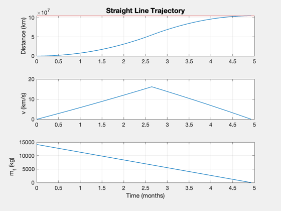

Contents
Mars mission
Compute the optimal exhaust velocity for the Mars mission (given the other engine parameters), and the resulting thrust required for the specified payload.
See also: StraightLineOptimal, InitialMass, SwitchTime, EngineReport, SimulateStraightLineTrajectory, Straight2DStructure, Constant
%-------------------------------------------------------------------------- % Copyright (c) 2017 Princeton Satellite Systems, Inc. % All rights reserved. %--------------------------------------------------------------------------
Set up the problem
d = Straight2DStructure;
day = 86400;
aU = Constant('au');
d.dF = 0.7*aU;
d.mP = 30000;
d.tF = 150*day;
d.sigma = 1.5*1000;
Solve
[uE, thrust, data] = StraightLineOptimal( d ); m0 = InitialMass( thrust, data ); tS = SwitchTime( thrust, uE, d.tF, m0 ); [~,dOut] = EngineReport( thrust, data );
Display the results
fprintf(1,'\nStraight Line Demo to Mars:\n'); fprintf(1,'Desired distance %12.2f AU\n',d.dF/aU); fprintf(1,'Travel time %12.2f days\n',d.tF/day); fprintf(1,'Payload %12.2f kg\n',d.mP); fprintf(1,'Specific Power %12.2f kW/kg\n',d.sigma/1000); fprintf(1,'Exhaust velocity %12.2f km/s\n--\n',uE); fprintf(1,'Switch time %12.2f days\n',tS/day); fprintf(1,'Thrust %12.2f N\n',thrust); fprintf(1,'Power %12.2f MW\n',dOut.mP/1e6); fprintf(1,'Mass Dry %12.2f kg\n',dOut.mD); fprintf(1,'Mass Fuel %12.2f kg\n',dOut.mF);
Straight Line Demo to Mars: Desired distance 0.70 AU Travel time 150.00 days Payload 30000.00 kg Specific Power 1.50 kW/kg Exhaust velocity 111.55 km/s -- Switch time 80.43 days Thrust 121.84 N Power 0.03 MW Mass Dry 42033.27 kg Mass Fuel 14155.52 kg
Simulate to check
SimulateStraightLineTrajectory( dOut ); subplot(3,1,1) hold on yy = axis; plot(yy(1:2),[1 1]*d.dF,'r'); %-------------------------------------- % $Id: 2cb625bda77c180b453661a2b9189c0541d0b90c $